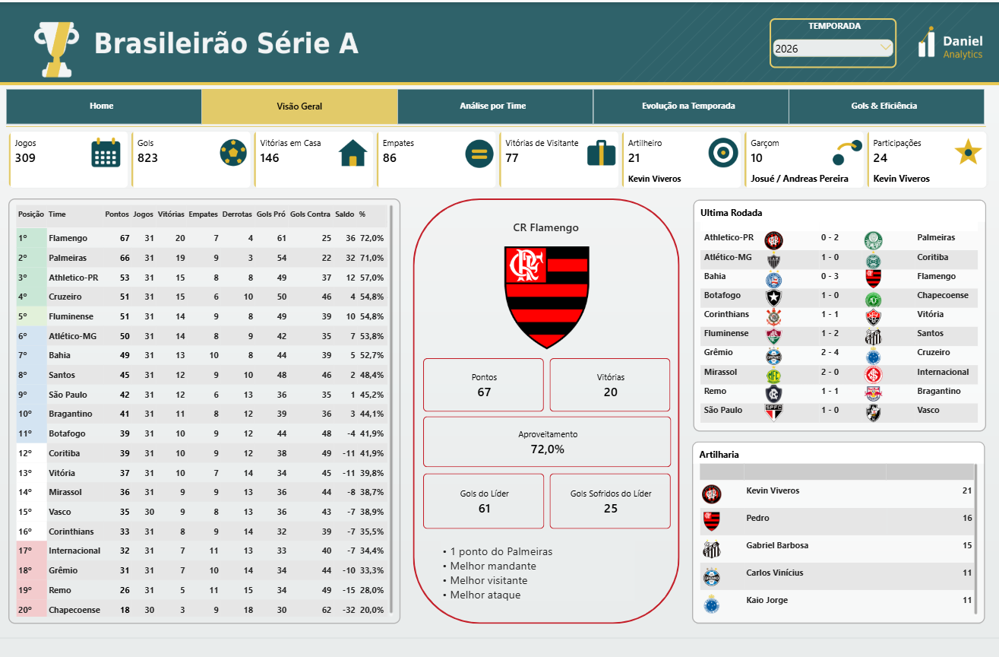
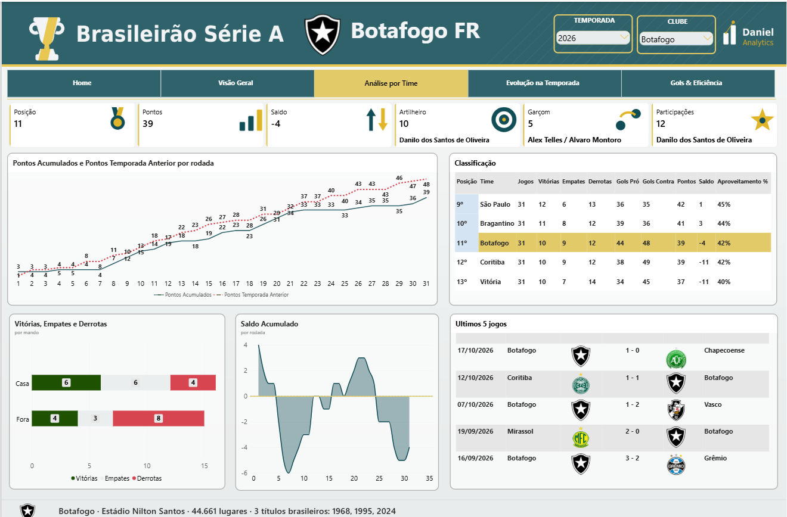
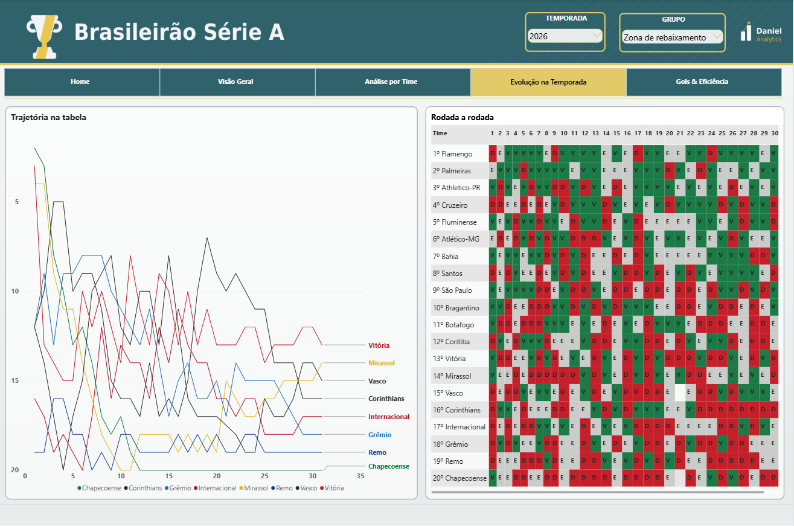
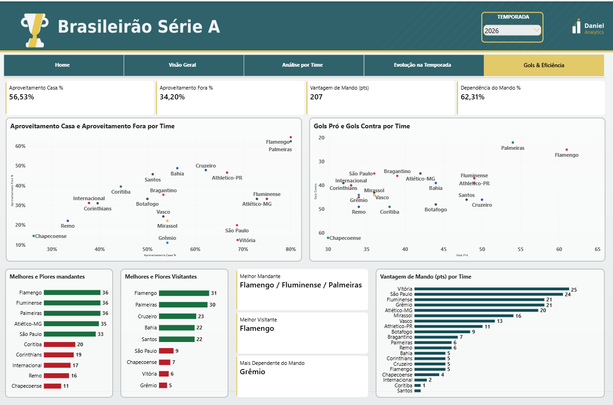

Cada tela responde uma pergunta
A estrutura segue uma ordem narrativa: veredicto, trajetória, explicação, protagonistas. Os números que respondem a pergunta principal vêm primeiro e com mais peso visual. O detalhamento desce.
Home
Navegação limpa, sem dado nenhum. A primeira tela existe para orientar, não para informar.
Visão Geral
O líder ganha bloco próprio, com escudo grande e os fatos que o distinguem. A classificação completa à esquerda, os jogos da rodada e a artilharia à direita.

Análise por Time
Pontos acumulados contra o próprio desempenho do ano anterior, saldo de gols como área, e a vizinhança do clube na tabela — dois acima e dois abaixo.

Evolução na Temporada
Trajetória de posição rodada a rodada com eixo invertido, e o mapa da temporada: 20 clubes por 38 rodadas, ordenados por classificação.

Gols & Eficiência
Duas dispersões comparando os 20 clubes em dois eixos ao mesmo tempo: aproveitamento em casa contra fora, e ataque contra defesa.
